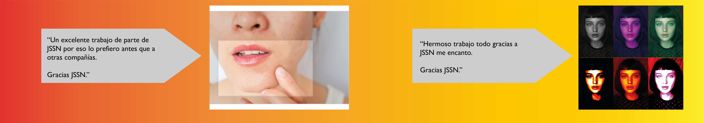
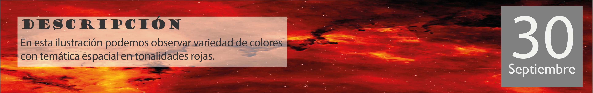

First slide label
Some representative placeholder content for the first slide.

Second slide label
Some representative placeholder content for the second slide.

Third slide label
Some representative placeholder content for the third slide.



Exposición como encontrar el flujo en el diseño de la interacción.
En pocas palabras, un diagrama de flujo es un método de diseño centrado en el usuario que permite representar visualmente cómo se mueve el usuario en la web o aplicación. El objetivo es dibujar y analizar al detalle los distintos flujos para optimizarlos y comunicarlos al resto del equipo.

DESCRIPCION
Afiche de Talentic sencillo y con puntos mas para un publico mas visual que legible.
DESCRIPCION
Describe el sentimiento de seguir hacia adelante a pesar de sostener la idea de el sufrimiento de la dice.

DESCRIPCION
En esta imagen podemos observar a un jugador de futbol envuelto en llamaradas que da a entender su profesionalismo y calidad.


DESCRIPCION
Ilustración de los alpes en donde se experimenta una soledad absoluta donde la tranquilidad abunda.
BIOGRAFÍA
JSSN es un sitio web de un productor de multimedia dirigido a compradores con ojo para la imagen. La empresa se fundó en 2022 y desde entonces ha crecido hasta convertirse en uno de los marketplaces online más importantes de Colombia. Con su sede en bogotá, JSSN ofrece a sus clientes más de 200 artículos en muchas categorías de productos.
Perfil Profesional

whatsapp